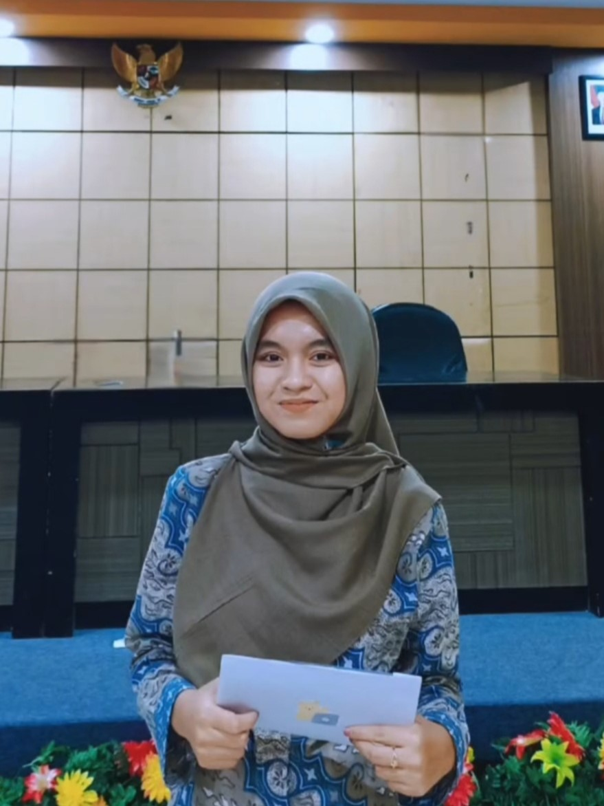

Mahasiswa Sistem Informasi yang berfokus pada Data Science, Machine Learning, Deep Learning, NLP, dan Time Series Forecasting.

Projects
Organisasi
Kompetisi
Bidang Riset
Halo! Saya Novita Intan Nur Rohmah, mahasiswa Sistem Informasi Universitas Duta Bangsa Surakarta dengan IPK sementara 4.00/4.00. Saya berfokus pada Data Science, Machine Learning, Deep Learning, NLP, dan Time Series Forecasting serta aktif mengembangkan berbagai proyek berbasis AI dan analisis data.
Selain aktif dalam riset dan menghasilkan dua publikasi artikel ilmiah nasional, saya juga memiliki pengalaman sebagai Sekretaris Umum Himpunan Mahasiswa, MC & Moderator, dan Talent Content Creator AI. Saya tertarik membangun solusi berbasis data yang akurat, mudah dipahami, dan memberikan dampak nyata.
Fokus Riset & Kompetensi akademis meliputi pengembangan model prediktif dan pengelolaan arsitektur data:
Studi komparatif algoritma tabular deep learning menggunakan TabNet dan TabPFN. Mengimplementasikan Explainable AI (XAI) untuk visualisasi kontribusi fitur kesehatan utama.
Analisis sentimen ribuan ulasan pengguna aplikasi BRImo menggunakan pendekatan Natural Language Processing (NLP) untuk klasifikasi kepuasan pelanggan.
Peramalan omzet retail harian Rossmann Store Sales. Membandingkan model statistik dengan arsitektur RNN, LSTM, dan GRU menggunakan evaluasi MAE, RMSE, dan R2 Score.
Berpartisipasi sebagai Campus Ambassador dengan membantu promosi program MySkill melalui media sosial dan lingkungan kampus. Secara aktif mengikuti program pengembangan diri melalui platform e-learning MySkill serta menyelesaikan berbagai tugas mingguan terkait peningkatan keterampilan profesional, personal branding, dan pengembangan karier.
Berperan sebagai Talent Content Creator dalam pembuatan konten edukatif mengenai pemanfaatan Artificial Intelligence (AI) untuk kebutuhan akademik dan penelitian. Bertanggung jawab membuat video sesuai brief yang diberikan tim, menyampaikan materi secara komunikatif, serta mendukung proses produksi konten digital berbasis AI untuk meningkatkan literasi teknologi di kalangan mahasiswa.
Mengelola administrasi organisasi, pengarsipan dokumen, penyusunan proposal kegiatan, serta laporan pertanggungjawaban (LPJ). Dipercaya menjadi Master of Ceremony (MC) dan Moderator pada berbagai kegiatan akademik, termasuk Kuliah Pakar Data Science, Seminar Teknologi Informasi, Workshop Proposal Skripsi, dan kegiatan kemahasiswaan lainnya.
Optimalisasi Produksi dan Profitabilitas UMKM Serabi Solo di Purwantoro, Wonogiri Menggunakan Integer Programming Branch and Bound Prosiding Seminar Nasional HUBISINTEK.
Perancangan Sistem E-Recruitment Berbasis Web pada Toko Ganep's Tradisi Solo sebagai Upaya Digitalisasi Prosiding Seminar Nasional SENATIB.
Kompetisi Bisnis Teknologi Tingkat Nasional (2024) – Pengembangan konsep arsitektur aplikasi "Heyra" untuk membantu penyandang tuna rungu wicara.
Terpilih sebagai salah satu kandidat Mahasiswa Berprestasi Utama tingkat Universitas Duta Bangsa Surakarta.
Saat ini saya terbuka untuk kesempatan magang di bidang Data Science, Machine Learning, maupun Data Analytics.